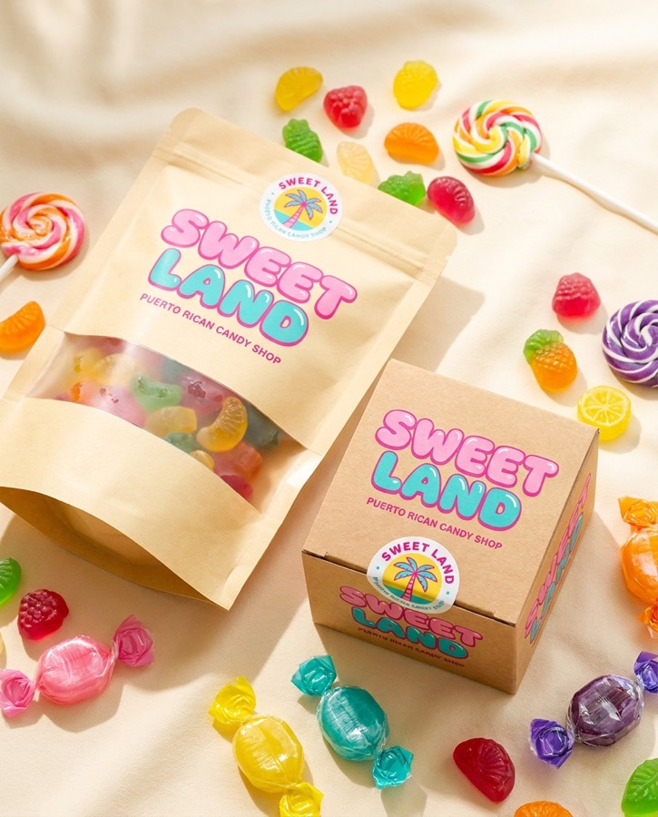

Hipódromo Camarero · Canóvanas, PR
Puerto Rican Candy Shop
Un mostrador de dulces frente a la pista. Pilones de los de antes, gomitas por libra, limbers para el calor y las chucherías que solo se consiguen aquí.
El surtido
Lo que hay en el mostrador
Seis familias fijas. El resto rota según lo que llegue y según el evento que tenga el hipódromo ese fin de semana.
-
Pilones
El clásico boricua: disco duro, mango de palito, colores que manchan la lengua. Surtido por sabor y tamaño gigante para foto.
-
Gomitas
Por libra, del dispensador. Ácidas, dulces, de fruta, de cola, y las de pica que aguantan a cualquiera.
-
Algodón de azúcar
Hecho al momento. Cono grande, colores de la casa, y bolsas selladas para llevar a la casa sin que se desinfle.
-
Limbers
De coco, de parcha, de tamarindo. Lo que salva el mediodía en Canóvanas cuando pega el sol de verdad.
-
Dulces típicos
Besitos de coco, dulce de coco, dulce de leche. Lo de siempre, bien hecho, empacado para regalo.
-
Importados
Chucherías que no están en el colmado: ediciones de afuera, sabores raros y lo que pide la gente por Instagram.

Empaque
Kraft por fuera, escándalo por dentro
El empaque va en cartón kraft sin blanquear y el color lo pone el dulce. La bolsa lleva ventana: se ve lo que estás comprando antes de abrirla, y se ve bien en una mesa de cumpleaños.
El logotipo va estampado en rosa chicle y turquesa piña, y el sello circular cierra la bolsa. Dos piezas, nada más — así el empaque cuesta poco y se reconoce de lejos.
- Formatos
- Bolsa con ventana · Caja cuadrada · Cono
- Cierre
- Sello circular troquelado
- Tintas
- Rosa chicle · Turquesa piña
Sistema de color
Cinco colores, sin excepciones
Toda pieza de Sweet Land — rótulo, bolsa, post, uniforme — sale de esta paleta. Nada apagado, nada fuera de lista.
-
Rosa chicle
#FF3D96 -
Amarillo mango
#FFC42E -
Turquesa piña
#12BFAF -
Morado uva
#7A2E9E -
Crema
#FFF4E4
Visítanos
Estamos en el Hipódromo
- Dirección
- Hipódromo Camarero
Canóvanas, Puerto Rico - Días de carrera
- Por confirmar
- Horario
- Por confirmar
- Teléfono
- Por confirmar
- @sweetlandpr1
Los campos marcados Por confirmar son marcadores de posición a la espera de los datos reales del negocio.